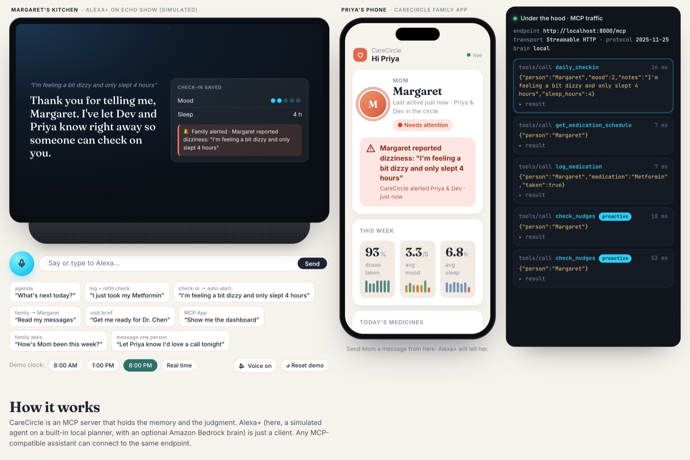

welcome to thehasiniverse
hi, i'm hasini ✿ and i lovvve to play with software.
i poke at things until they work, then i make them do something nice for people. right now that means voice agents with memory, neural nets written by hand, and a lot of pink.
psst, the planets
are clickable
that's me!
stuff i'm proud of

CareCircle
my nani-and-tata-proof Alexa. it remembers an older person's medicines, reminds them on time, and pings the family only when something's actually wrong.
read the whole story →The Lazy Artist
i caught a neural net cheating. it was reading colour instead of shape, and Grad-CAM gave it away.
Research Map
ten years of papers from four indian institutes, squished into one dashboard. type any scientist's name and watch their co-author web appear.
see it →pick a planet
projects
every single thing i've built. hackathons, assignments that got out of hand, tiny games.
fly there → hiabout me
from warangal, now at iiit hyderabad. jee survivor. here's the rest.
fly there → ✿hire me
need a website, a chatbot, a dashboard or a python script? i'll build it with you.
fly there →